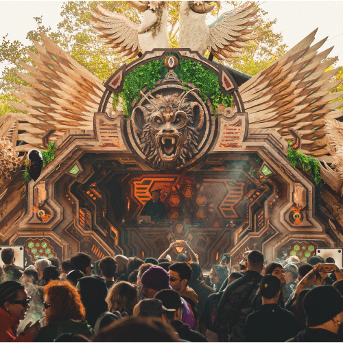

Parvati Records es una etiqueta clave dentro del psytrance, reconocida por su estética sonora profunda y su conexión con la cultura del trance. Este sitio reúne el origen del proyecto, su propuesta artística, el universo del Gathering y una selección visual para explorar su identidad.

Parvati Records es más que un sello musical: es una comunidad artística que explora la conexión entre sonido, naturaleza y conciencia. Desde sus inicios, el proyecto ha impulsado una estética sonora profunda dentro del psytrance, promoviendo experiencias colectivas donde la música se transforma en un lenguaje espiritual y cultural. A través de festivales, artistas y encuentros alrededor del mundo, Parvati propone un espacio de exploración sensorial que trasciende la pista de baile y se convierte en una experiencia compartida.
Explorar origenParvati Records representa más que música: es un encuentro entre arte, naturaleza y conciencia colectiva. Cada gathering propone un espacio donde el sonido, la estética visual y la comunidad crean una experiencia inmersiva que trasciende lo musical.
Leer más